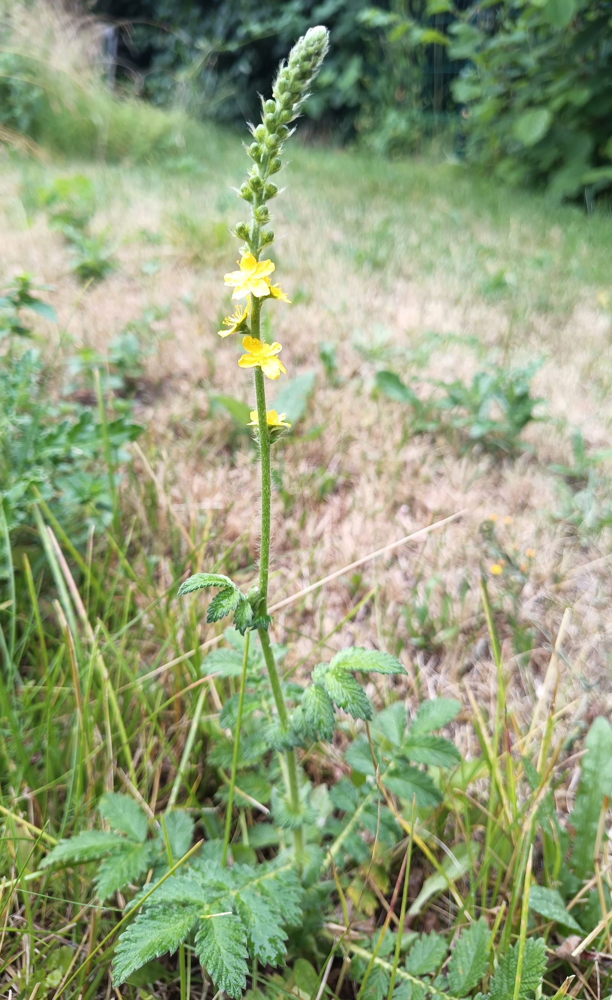
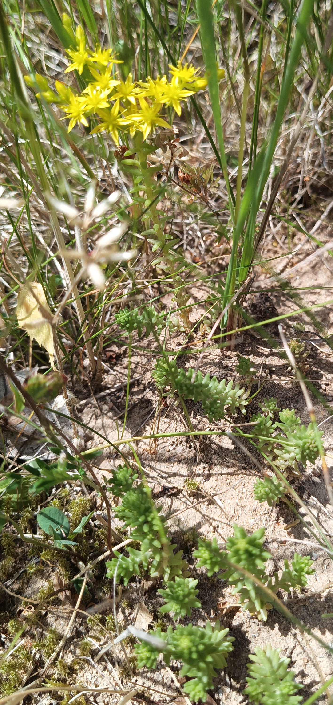
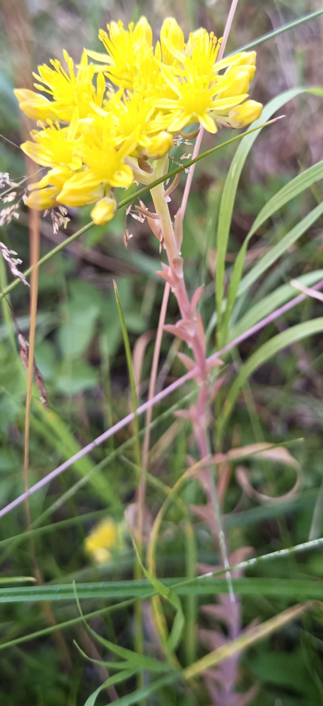
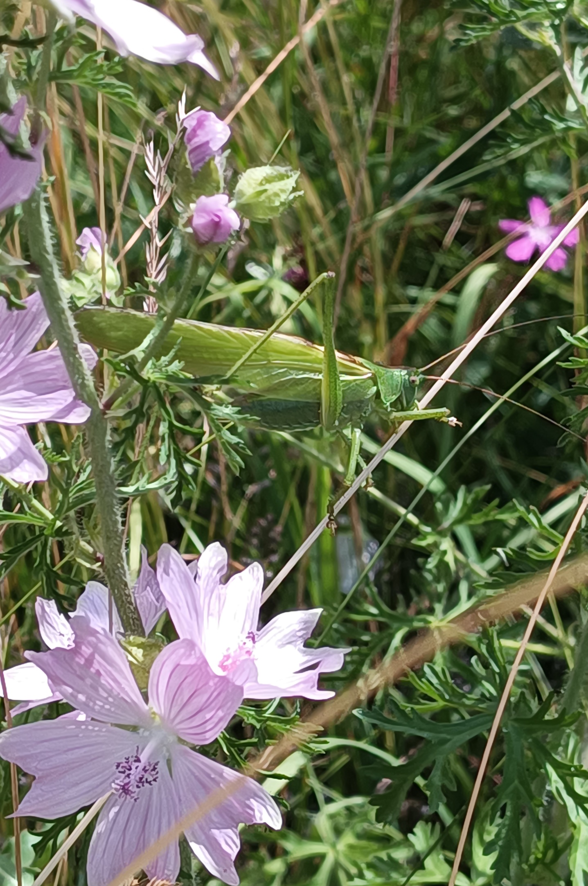
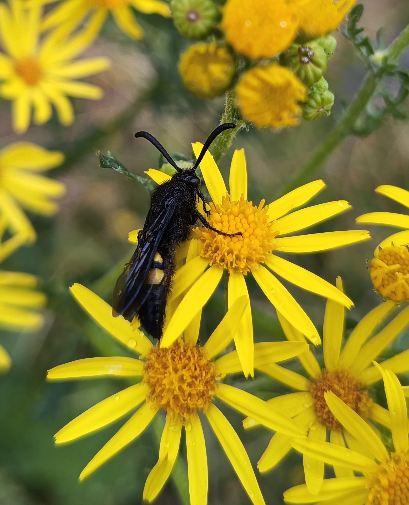
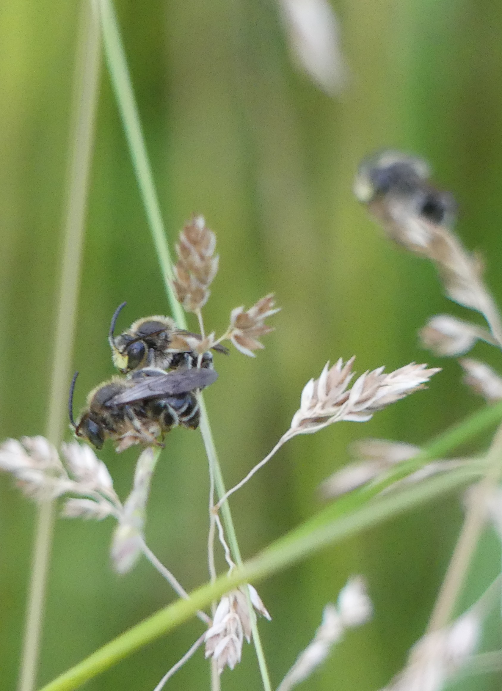
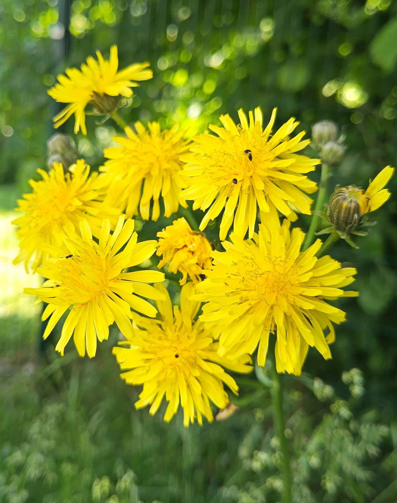
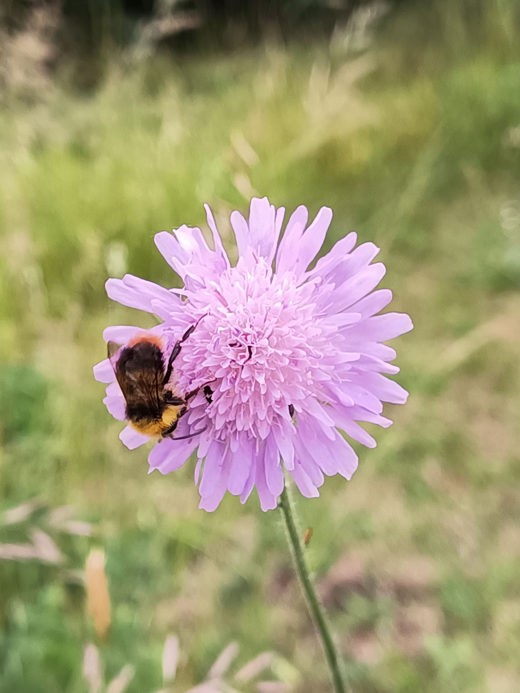
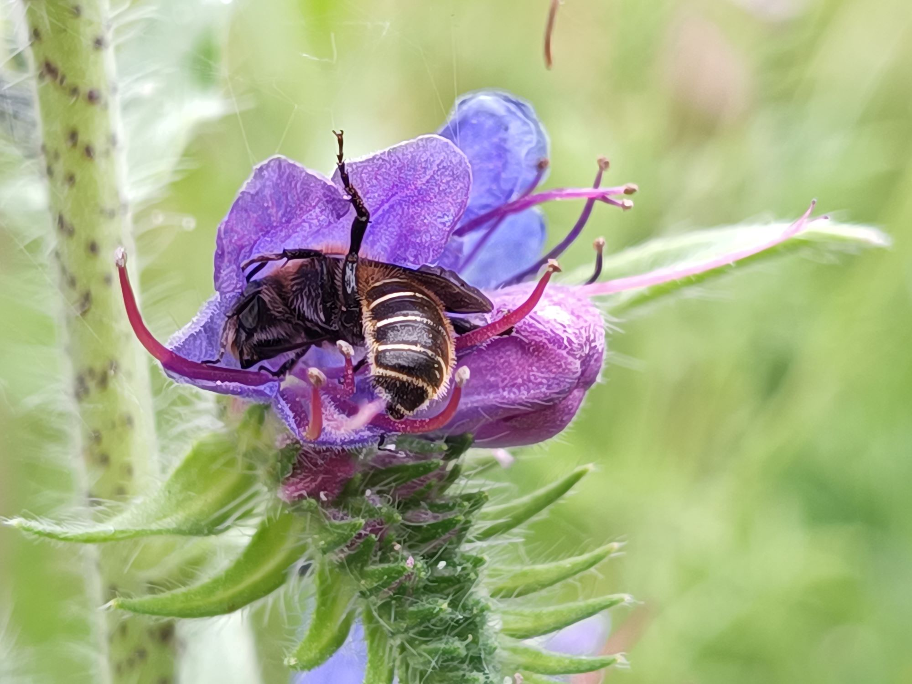

Gepflegte
Wildnis
Gepflegte
Wildnis
Fotoarchiv − Juni & Mai 2025
im Aufbau

Kleiner Odermennig (Fl 2)
1. Blüten dieser Art im Biotop
Austrieb im Februar


Milder Mauerpfeffer (Fl 8) und Felsen-Fetthenne (Fl 9)

Braunkolbiger Braun-Dickkopffalter

Grünes Heupferd neben Moschus-
Malve und Kartäusernelke (Fl 7)

Borstige Dolchwespe auf Jakobs-Greiskraut
(Fl 7)

Abends 3 gemeinsam schlafende Wald-Schenkelbienen-Männchen
Ein Hautflügler, der eine der senkrechten alten
Brombeerranken bewacht

Moschus-Malve
(Fl 3)

Wilde Malve
(Fl 19)

Wiesen-Pippau
(Fl 5)

Wiesenhummel auf
Acker-Witwenblume
dieses Exemplar im März

Natternkopf-Mauerbiene